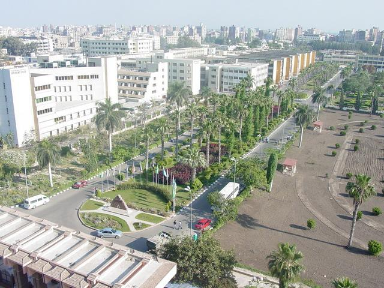

تاريخ الجامعه
بدأت الدراسة بكلية الطب عام 1962 كفرع لجامعة القاهرة ثم أنشئت جامعة شرق الدلتا بالقانون رقم 49 لسنة 1972 وتم تعديل المسمى إلى جامعة المنصورة عام 1973، وتعتبر الجامعة السادسة من حيث النشأة بين جامعات الجمهورية الثلاث عشر ويشغل الحرم الجامعي مساحة 300 فدان تقريبا من ناحية الجنوب الغربي لمدينة المنصورة ويضم كليات الطب – طب الأسنان – الصيدلة – الهندسة - السياحة والفنادق –الزراعة –التجارة –الحقوق – العلوم – التربية – الحاسبات والمعلومات – التمريض – الطب البيطري – التربية الرياضية وبعض الوحدات الخدمية كالإدارة العامة لرعاية الطلاب بملاعبها ومنشآتها وللمدن الجامعية والأخرى للطالبات ومعظم الوحدات ذات الطابع الخاص التي تخدم الجامعة والمجتمع، هذا بالإضافة إلى المساحات التي تشغلها كليات الجامعة الواقعة خارج نطاق الجامعة ككلية الآداب التي تقع بشارع أحمد ماهر وكليه التربية النوعية المنصورة وفرعيها بمدينتي ميت غمر ومنية النصر ، واخيرا كلية الفنون الجميلة وهناك مجمعاً ضخماً للخدمات الطلابية بالحرم الجامعي للطلاب ونادى اجتماعي ومكتبة ثقافية، ومطبخاً حديثاً للعاملين وأعضاء هيئة التدريس بالجامعة وكذلك مستشفى حديثا للطلاب
ترتيب الجامعة على مستوى مصر وأفريقيا والعالم
جامعة المنصورة من الجامعات المتصدرة في إحصائيات الترتيب المحلى والدولي
فحسب اخر الإحصائيات في يناير 2016م فقد حصلت جامعة المنصورة على المركز الثانى على مستوى جامعات مصر، والمركز 9 على مستوى جامعات قارة أفريقيا [1]. تم اختيارها المركز 96 على مستوى العالم بتقييم التايمز للجامعات سريعة النشأة التى لم يمر عليها 50 عام وذلك عام 2012 تم اختيارها ضمن أفضل مائة جامعة لدول الأسواق الناشئة بما فيها دول الـ BRICS (البرازيل وروسيا والهند والصين وجنوب إفريقيا) وفقاً للتصنيف البريطانى للجامعات (التايمز THE) لعام 2014 حيث جاءت في الترتيب رقم 97 عالميا
الأهداف الإستراتيجية للجامعة
.تعزيز قدرات الجامعة لتطوير الأداء المؤسسى وتحقيق التميز فى كافة المجالات
.دعم منظومة ضمان الجودة والتحسين المستمر فى ضوء معايير الجودة الدولية
.دعم وتطوير الجهاز الإداري وتنمية قدرات أفراده
.تنمية الموارد المادية والمالية والبنية التحتية والتكنولوجية
.دعم وتطوير قدرات أعضاء هيئة التدريس والهيئة المعاونة
.دعم الطلاب والخريجين وتنمية مهاراتهم
.دعم وتطوير منظومة التعليم والتعلم
.تطوير منظومة البحث العلمى والأنشطة العلمية
.تحقيق الشراكة المجتمعية والتنمية المستدامة
.تدويل الجامعة بما يعزز القدرة التنافسية له
رؤية الجامعة
تحقيق التميز والريادة محلياَ وعالمياَ فى بناء مجتمع المعرفة من خلال التنمية المستدامة والشراكة المجتمعية الفاعلة والتدويل
رسالة الجامعة
تقديم برامج تعليمية وبحوث مميزة تخدم المجتمع من خلال توفير بيئة تكنولوجية داعمة للتعلم المستمر والبحث العلمى والابتكار وبناء شراكات فاعلة داخلياً وخارجياً طبقا لمعايير الجودة العالمية